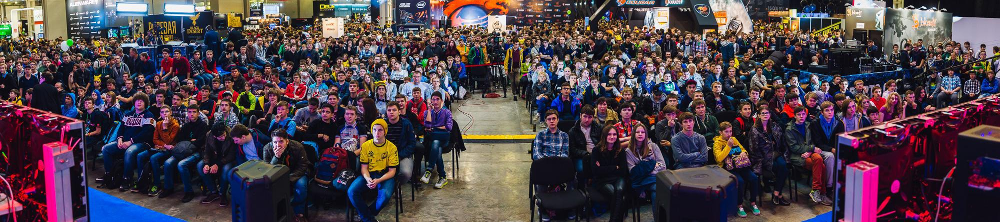
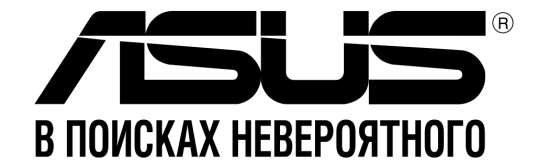
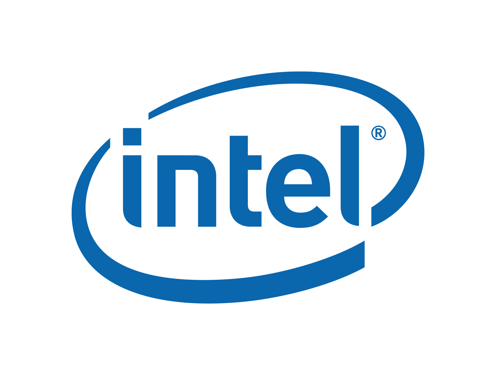
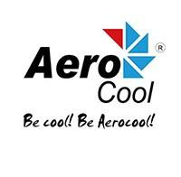
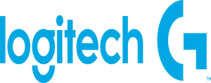

В Москве завершились главные события российского и игрового мира - крупнейшая в СНГ юбилейная выставка Игромир и фестиваль поп-культуры Comic Con Russia. Компания Game Show, эксклюзивный оператор киберспортивной зоны на Игромире, вновь привлекла внимание десятков тысяч посетителей.
На протяжении четырех дней в зоне Game Show проходили ключевые матчи в рамках Global eSports Cup Season 1 в дисциплине Dota 2 региона СНГ, а также гранд-финалы второго сезона Game Show Open по CS:GO и Hearthstone с общим призовым фондом в 350 000 рублей.
Результаты матчей Global eSports Cup Season 1 в дисциплине Dota 2.
Четыре команды получили прямое приглашение на данный этап: HellRaisers, Arcade.Power Rangers, ScaryFacez и Newteam123, собранная ветераном Dota 2 Артуром Костенко aka Goblak. Две команды были отобраны в результате открытой квалификации, в которых участвовало более 200 коллективов со всего СНГ: BRM (ex Walrus Punch) и также недавно сформировавшаяся команда CIS Rejects. Еще один коллектив, получивший возможность попробовать свои силы на PRO сцене - команда Enso, победитель турнира Game Show Open.

Семь коллективов из России и СНГ сражались за выход в плей-офф турнира Global eSports Cup. По итогам соревнований только четыре коллектива продолжат свой путь к призовому фонду в 330 000$ и званию чемпиона. Призовой фонд третьего группового этапа региона СНГ, прошедшего в рамках выставки Игромир, составил 20 000$.
Итоги трех дней противостояния выявили победителя по дисциплине Dota 2 - ими стали игроки из команды CIS Rejects, которые заняли первое место и получили кубок LAN ивента третьего группового этапа. В дальнейшей борьбе также примут участие три команды: HellRaisers, ScaryFacez и Newteam123.
Результаты гранд-финала по Counter Strike: Global Offensive.
В бизнес-день, 1 октября, посетителям посчастливилось наблюдать за Гранд-Финалом второго сезона Game Show Open по дисциплине Counter Strike: Global Offensive. Четыре сильнейших команды этого сезона, пройдя через несколько этапов квалификации, приехали в Москву, чтобы сразиться за призовой фонд в размере 250 000 рублей. Турнир прошёл по GSL системе: выигрывая в первом раунде, команда попадала в матч за 1-2 место, а проигрывая отправлялась воевать за 3-4 место. В результате захватывающих и зрелищных матчей, мы узнали чемпионов второго сезона! Ими стали ребята из казахстанского коллектива PARTY.
Результаты гранд-финала по Hearthstone.
Фанаты Hearthstone также не были обделены, ведь на протяжении всей выставки у них была возможность сразиться с Александром “Happa” Знаменским в зоне Zenfone на стенде генерального партнера - ASUS. Каждый участник получал не только положительные эмоции, но и ценные призы! Гранд-Финал второго сезона Game Show Open по этой замечательной карточной игре прошёл в субботу, 3 октября. Восемь игроков со всех уголков СНГ сразились за призовой фонд в размере 100 000 рублей. Чемпионом стал Дмитрий “Unwi” Ижмяков, не проигравший за время турнира ни одного матча.
Активности партнеров
Новый мобильный оператор Tele2 представил на выставке “Игромир 2015” собственный стенд, на котором гости мероприятия голосовали против мобильных переплат с помощью специальной интерактивной стены. За четыре дня посетители выставки оставили более 20 тысяч голосов за низкие цены. На площадке оператора проводилась трансляция лучших матчей c главной сцены Game Show, а также была организована Wi-Fi зона, где гости подключались бесплатному интернету. Геймеры, пришедшие на стенд Tele2, смогли получить автографы известных киберспортсменов и стримеров. На главной сцене мероприятия проводились конкурсы от оператора, победители которых получили возможность лично пообщаться с такими звездами киберспорта, как Алексей j4 Липай, Евгений ChshrCt Кострома, Владимир PGG Аносов.
Компания ASUS на выставке Игромир 2015 продемонстрировала свои лучшие и самые новые продукты для геймеров и провела соревнование «ASUS – компьютер года 2015», позволившее продемонстрировать все возможности отечественных производителей по сборке компьютеров hi-end класса, показать индивидуальный подход к сборке ПК и его внешнему виду. В соревновании приняли участие ведущие российские производители ПК hi-end уровня – HyperPC, DigitalRazor, EvoPC и Mejin. Собранные компьютеры можно было увидеть на стенде компании ASUS, а проголосовать за звание “Лучшего компьютера ASUS 2015” можно было на сайте компьютергода.рф. Пользователи, принявшие участие в голосовании, также разыграли ценные призы: игровой ноутбук ASUS G751, монитор ASUS ROG Swift PG278Q и мини-ПК ASUS ROG GR6.
Крупнейшие отечественные производители игровых ПК, такие как HyperPC, DigitalRazor, EvoPC и Mejin подготовили для посетителей выставки Игромир 2015 настоящий подарок. Они собрали мощнейшие игровые ПК на базе компонентов ASUS и Republic of Gamers, предоставив возможность всем желающим поиграть в любые современные игры на максимальных настройках.
Прямо на стенде ASUS все дни можно было сразиться командой или в формате public match в дисциплине Dota2. Команды-победители и команды-проигравшие получили в подарок геймерскую продукцию от ASUS, а для зрителей были проведены развлекательные конкурсы и разыграны фирменные сумки, адаптеры и другие призы от компании.
В субботу на второй день выставки среди посетителей был разыгран смартфон Zenfone 2 ZE551ML 4 gb. А в воскресенье в середине дня прямо на стенде ASUS для всех поклонников Dota2 раздал автографы профессиональный игрок в Dota 2, игрок команды HellRaisers - Андреей "Dread" Голубев.
На стенде торговой марки HyperX® посетители выставки получили возможность: оценить все новинки HyperX продукции: память DDR4 из линеек Savage и Fury, SSD PCI-e HyperX Predator, игровые гарнитуры HyperX Cloud Core и HyperX Cloud II Pink. Кроме того все желающие, смогли побороться в турнирах по CS:GO и Dota 2, получить автографы и сделать совместные фото с именитыми гостями. Среди гостей были звёзды киберспорта Дмитрий «Hooch» Богданов, Сергей «Fox» Столяров, Михаил «Dosia» Столяров, Денис «Seized» Костин и Егор «Flamie» Васильев из нынешнего состава Na`Vi, а также именитые стримеры Vityshka и Versuta и специальные гости Анна Костенко, Александр Happa Знаменский и многие другие. Все желающие могли поучаствовать в конкурсах, викторинах и лотереях с ценными призами от бренда HyperX® и приобрести качественную гарнитуру HyperX со скидкой до 33% прямо на стенде.
Aerocool представили на своем стенде новую модель блоков питания серии VP c более эффективным отводом тепла и высокой температурной выносливостью компонентов БП, а также провели на своем стенде фотоконкурс в оригинальной фотозоне.
А также большим количеством призов и сюрпризов порадовали аудиторию компании Logitech и Crucial.
Информация о компании
| Компания Game Show - это лидирующий на рынке России и СНГ организатор крупнейших киберспортивных LAN-мероприятий. Организатор межконтинентальных онлайн-лиг среди профессионалов по наиболее популярным дисциплинам. Game Show Studio – профессиональная онлайн-ТВ студия для геймеров. В структуру компании также входит ряд специализированных онлайн-площадок, где профессионалы и любители могут принять участие в разного рода турнирах. |
Информация о партнерах
 |
Федеральный мобильный оператор Tele2 запускает в Москве первую коммуникационную кампанию против мобильных переплат, в рамках которой начинает знакомить жителей столичного региона с брендом компании. Tele2, единственный в России сотовый оператор-дискаунтер, завоевавший доверие 35 миллионов абонентов в более чем 60 регионах, выступает против неоправданно высокой стоимости услуг на мобильную связь в Москве и громко заявляет о своей политике низких цен. Придерживаясь честного подхода, оператор предлагает своим потенциальным абонентам простые понятные услуги связи без «звездочек», скрытых условий и качественное обслуживание. Сеть Tele2 будет запущена в коммерческую эксплуатацию 22 октября 2015 года. |
|  |
Компания ASUS является создателем самых покупаемых и завоевавших наибольшее количество наград материнских плат, а также одним из трех ведущих производителей ноутбуков в мире. Будучи лидером новой цифровой эры, ASUS предлагает широкую линейку продуктов, включающую материнские платы, видеокарты, оптические приводы, мониторы, ПК, ноутбуки, нетбуки, серверы, мультимедийные устройства, беспроводные решения, сетевое оборудование, планшетные компьютеры и смартфоны. Все продукты ASUS отличает высокое качество и инновационность, они прекрасно подходят для современного дома и офиса. В 2014 году ASUS завоевала 4 326 наград. Оборот компании, насчитывающей более 13,6 тысяч сотрудников и высококлассных разработчиков по всему миру, составил в 2014 году 14,5 миллиардов долларов США. |
|  |
Корпорация Intel, ведущий мировой производитель инновационных полупроводниковых компонентов, разрабатывающий технологии, продукцию и инициативы, направленные на постоянное повышение качества жизни людей и совершенствование методов их работы. |
|  |
Компания AeroCool Advanced Technologies (AAT) была основана в 2001 году. На раннем этапе работы нашей задачей было поделиться своим техническим опытом и |
 |
HyperX – линейка высокопроизводительной продукции от компании Kingston Technology, ведущего независимого производителя устройств хранения данных. Модули памяти HyperX, SSD и USB-накопители, игровые гарнитуры и коврики для мыши разработаны с использованием высококлассных компонентов, которые обеспечивают исключительную производительность, качество и современный внешний вид, и используются профессиональными геймерами во всем мире. HyperX поддерживает более 20 команд во всем мире и является основным спонсором Intel Extreme Masters и Dreamhack. Узнайте, как HyperX с помощью самых современных технологий поможет вам играть и побеждать. |
|  | Компания Logitech является мировым лидером в производстве периферийных устройств, предоставляющих пользователям возможность легко и просто погрузиться в цифровой мир развлечений. Решения Logitech, совместимые с различными платформами, позволяют реализовать все возможности аудио- и видео- развлечений, игр, общения в социальных сетях, передачи данных через Интернет, а также видеосистем безопасности и управления домашним кинотеатром. Швейцарская открытая акционерная компания Logitech International, основанная в 1981 году, котируется на Швейцарской фондовой бирже (LOGN) и на бирже Nasdaq (LOGI) в США. |
Комментарии (0)